Restart from evidence
On this page
Back to implementation studies · Download the editable study


Force a stop between sessions. See whether a new process can decide what to do from the project state. A compact summary preserves useful context. A restart record must point to evidence the next process can check.
Start offline
Work the case below before you inspect the original source. The trace, exercise and worked answers are complete offline. The local crash and retry record gives you a second trace. Compare the records before draft commit, after draft commit and after retry. The optional upstream links at the end need an internet connection.
Work a restart by hand
Build a mock table with two feature rows. F1 checks that an empty CSV creates a report with headers. F2 checks that a repeat import preserves the same row count. Both start as pending. Use F1 first.
At state A, the code change exists in the workspace. At state B, a test log records that the F1 check passed. At state C, a commit and the log ID agree with the F1 record. Stop the process separately after each state. Write down what a new process can prove.
| Stop | Observed after restart | First safe step |
|---|---|---|
| A | Workspace differs from the last commit | Inspect the changes and run the F1 check |
| B | A passing log exists for the prior workspace | Match its recorded code revision or rerun the check |
| C | Commit and evidence agree with the feature record | Check the baseline, then choose F2 if it passes |
For this exercise, the feature record may claim verified only when its evidence names the same code revision. A process can also store a content digest if the workspace has no commit yet. The next process must know how that digest was calculated. Prefer a short artifact pointer and an exact check command.
Compare with compaction
Write a 45-word summary after state B. Preserve the goal, evidence pointer and open decision. Remove the repeated test output. Pass the summary to a partner without the old conversation and ask them to choose a next step. They still need the log or a check they can run. Mark which statements describe intention, which describe observation, and which claim a result at a known revision.
The failure case is a crash just after the initializer writes
feature_list.json. The restart path sees the file. Git or
the startup script may still be absent. The file serves as a start
marker in the demo. In your adaptation, define a small readiness check
that verifies each required artifact. Treat partial initialization as a
state you can inspect and resume.
Adapt the handoff
Use a fixture folder and a local test command. Add states
initializing, pending, verified
and needs_recheck. Store the feature ID, check name,
revision, result and evidence path. Make a fresh process run your
readiness check and choose a single next action.
Create four restart fixtures: missing setup script, changed code after a pass, matching pass and commit, and a failed baseline. Give one fixture a compact summary that claims completion. Give another no summary at all. Compare the new process's decision with the evidence in each case.
Check your solution
The failed baseline prevents selection of a new feature. A stale log causes a recheck. An incomplete setup returns a specific missing artifact. A valid pass remains usable across process restarts. The summary makes a handoff easier to read, while the feature and evidence records determine whether the next step is justified.
Retrieve from memory
- What does the demo test before it selects the initializer prompt?
- Which facts must survive as external records after context compaction?
- What should the next process do with a pass log for an earlier revision?
Show worked answers
- The process checks whether feature_list.json exists. The prompt asks for additional setup artifacts.
- Preserve the feature requirement, check command, code revision, result and evidence path outside the conversation.
- Compare the recorded revision with current code. Rerun the check if the revisions differ.
Optional source inspection
Read Effective
context engineering for AI agents at “Compaction” and “Structured
note-taking.” Read Effective
harnesses for long-running agents at “Feature list,” “Testing” and
“Getting up to speed.” Then open run_autonomous_agent and
run_agent_session in autonomous-coding/agent.py.
Follow the initializer
prompt and the coding
prompt. The main URLs were read on 2026-11-20.
Draw three columns for the program, the session prompt and the file
system. The Python loop uses the existence of
feature_list.json to choose the initial path on process
start. It creates a fresh client for each loop iteration. The
initializer prompt asks for the feature list, startup script and Git
state. The coding prompt asks the session to check baseline behavior,
work on one feature and record progress. run_agent_session
reports continue or error. A session's normal
return does not certify that a feature passed.